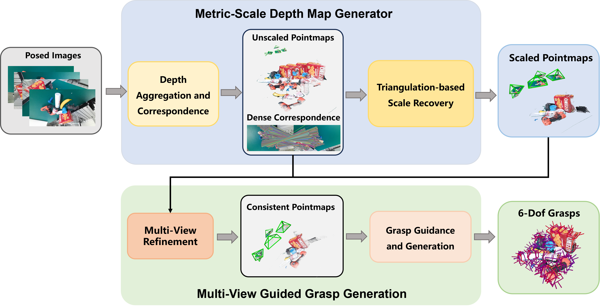

Abstract
We present MG-Grasp, a depth-free 6-DoF grasping framework that derives high-quality grasps directly from sparse multi-view RGB observations. Instead of treating reconstruction as a separate preprocessing step, MG-Grasp couples metric scale recovery, multi-view consistency refinement, and grasp generation into a unified pipeline for reliable robotic manipulation. Given sparse posed RGB images with known camera intrinsics and extrinsics, the method first converts up-to-scale two-view predictions into metric depth through triangulation-based scale grounding, and then refines all views using a two-stage confidence-weighted multi-view optimization. The refined geometry is fused into a grasp-oriented point cloud for stable 6-DoF grasp generation. Experiments on GraspNet-1Billion and real-world robotic setups show that MG-Grasp achieves state-of-the-art performance among RGB-based 6-DoF grasping methods while operating without depth sensors.
Framework Overview

Overall pipeline of MG-Grasp: metric-scale depth generation, multi-view refinement, and 6-DoF grasp generation from sparse RGB observations.
Method Highlights
- Depth-free 6-DoF grasping: reliable robotic grasp generation from sparse multi-view RGB observations only.
- Triangulation-based Scale Recovery: grounds up-to-scale two-view predictions into a shared metric coordinate system.
- Two-stage Multi-View Refinement: enforces dense cross-view consistency using confidence-weighted 3D and 2D objectives.
- Grasp-oriented fusion: refined geometry is filtered and decoded into stable 6-DoF grasps with a local grasp model.
6-DoF Pose Generation
Qualitative examples of generated 6-DoF grasp poses from MG-Grasp.
Key Results
- GraspNet Average AP: 47.65 / 48.21 on the RealSense / Kinect splits.
- Improvement over GraspNeRF: +31.74 / +29.83 average AP on RealSense / Kinect.
- Improvement over VG-Grasp: +12.18 / +14.33 average AP.
- Real Robot Performance: 87.5% grasp success rate and 100% completion rate.
- Inference Speed: 2.86s per inference with 5 views, and 2.13s with 4 views.
Benchmark Summary
| Method | Data | Seen | Similar | Novel | Average |
|---|---|---|---|---|---|
| GraspNeRF | RGB | 22.49/24.61 | 14.15/17.67 | 11.08/12.86 | 15.91/18.38 |
| VG-Grasp | RGB | 59.23/54.65 | 36.34/35.13 | 10.84/11.85 | 35.47/33.88 |
| MG-Grasp (Ours) | RGB | 63.70/66.80 | 56.03/57.35 | 23.22/20.47 | 47.65/48.21 |
Real-World Robotic Evaluation
We further validate MG-Grasp on a real robotic platform in tabletop scenes using a UR5e manipulator, a Robotiq 2F-85 adaptive gripper, and a RealSense D435i camera, while only using RGB images. Different from prior single-view real-robot evaluations, MG-Grasp uses 4 sparse RGB views per scene and runs with about 2.13 seconds end-to-end latency.
- Success Rate: 35/40 = 87.5%
- Completion Rate: 35/35 = 100%
- Transparent Objects: 11/20 = 55.0% success, 11/15 = 73.3% completion
Real-World Robot Experiments
Real-robot grasping demonstrations in tabletop scenes using sparse RGB observations.
Transparent Object Grasping
MG-Grasp also generalizes to transparent-object grasping scenarios in real-world experiments.
BibTeX
@misc{mggrasp2026,
title={MG-Grasp: Metric-Scale Geometric 6-DoF Grasping Framework with Sparse RGB Observations},
author={Kangxu Wang and Siang Chen and Chenxing Jiang and Shaojie Shen and Yixiang Dai and Guijin Wang},
year={2026},
url={https://YOUR_DOMAIN.com/YOUR_PROJECT_PAGE}
}